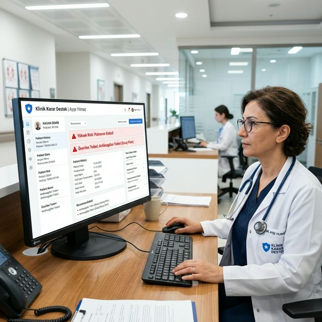
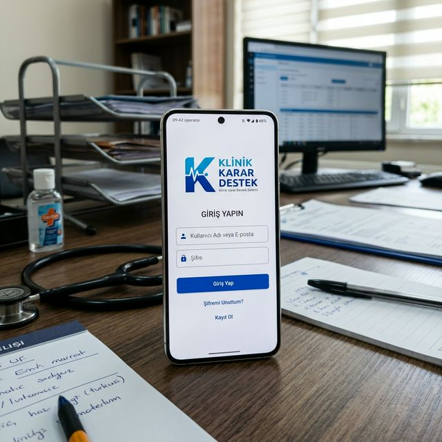
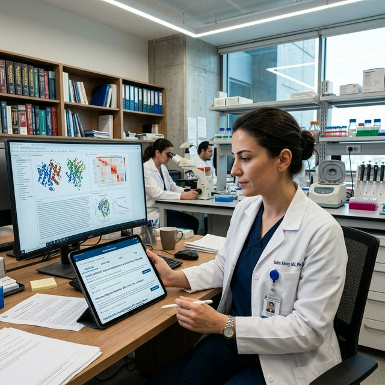
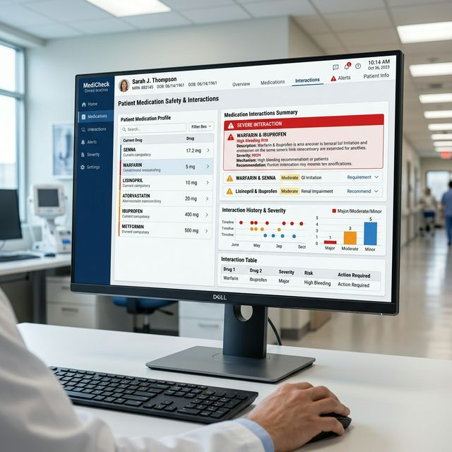
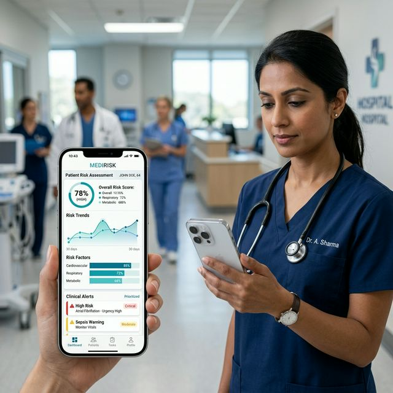
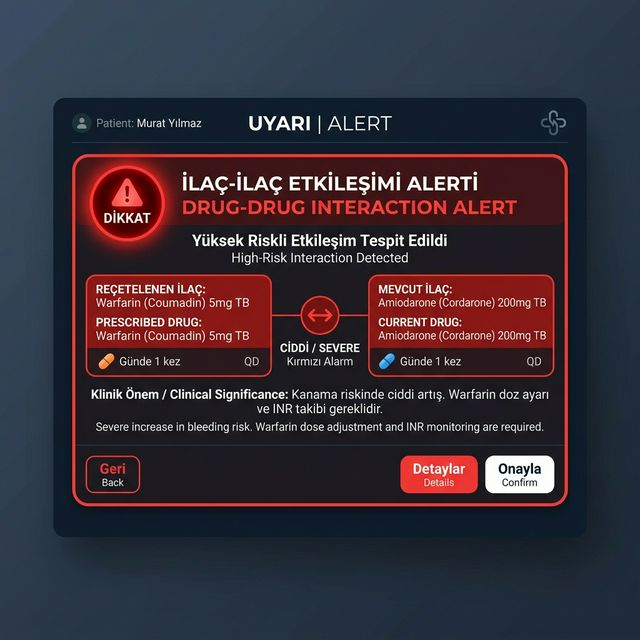

Karmaşık medikal bulguları, akademik yayınları ve milyonlarca kalem ilaç verisini saniyeler içinde analiz eden, hekimlerin hata payını minimize eden yüksek hassasiyetli klinik asistanı.


Uygulamanın kalbi olan kontrol paneli, hekime ihtiyacı olan kritik bilgileri filtreleyerek sunar. Hasta güvenliğini en üstte tutan kırmızı alarm modülleri, tanı koymak yerine literatür ışığında rasyonel seçenekler sağlar.
Optimize edilmiş veri işleme hatları ile en yüksek hassasiyet.
Düşük gecikmeli analiz motoru sayesinde anlık teşhis desteği.

Hastalık, semptom ve ilaç aramalarını PubMed ve global sağlık veritabanlarına yönlendirin. NLP motorumuz, binlerce klinik yayını süzerek vaka ile en uyumlu tıbbi referansları hekimin dikkatine sunar.

Milyonlarca kalem ilaç verisi arasından etken madde bazlı arama yapın. İlaç-ilaç etkileşimlerini, yan etkileri ve kontrendikasyonları "High-Risk" uyarılarıyla eşzamanlı takip ederek polifarmasi risklerini yönetin.
Ticari isimlerden bağımsız, moleküler düzeyde etkileşim ve dozaj kontrolü.
Platformun tüm modülleri hekim deneyimini ve hasta güvenliğini mükemmelleştirmek için tasarlanmıştır.


Sistem, en yoğun poliklinik şartlarında bile hızdan ödün vermeden güvenilir sonuçlar üretmek için geliştirilmiştir.
Sistemin her modülü bağımsız çalışır; bu sayede en yoğun kullanım anlarında bile takılma yapmaz ve her zaman erişilebilir kalır.
Birden fazla akıllı model aynı vaka üzerinde çalışır. Ortak bir karara vararak hata payını minimuma indirir ve güvenilirlik sağlar.
Önemli tıbbi kayıtlar ve analiz çıktıları, en yüksek güvenlik standartlarında, en hızlı erişilebilecek akıllı sunucularda saklanır.
İçerideki tüm veri trafiği özel bir zırhla korunur. Dışarıdan müdahaleye tamamen kapalı, uçtan uca güvenli bir iletişim katmanı sunar.